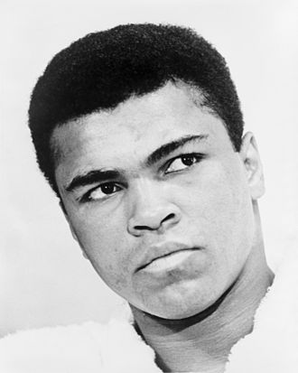

Muhammad Ali born January 17th, 1942 died June 3rd, 2016. He was an American professional boxer from Louisville Kentucky, known as the greatest of all time in the boxing world. Muhammad Ali was the worlds greatest to have ever done it in the ring. During a time of civil unrest, he was not afraid to speak his word. He began training in boxing when he was about 12 years old, and just at 18 he found himself winning a gold medal in the light heavyweight division in the Olympics. In his career as a professional, he was involved in some of the greatest fights in history. Some of them where such as fighting Joe Frazier which was known as the fight of the century it was that good. But one of Ali’s biggest fights of his carer which had an estimate at the time was the Rumble in The Jungle fight against George Foreman, this later became one of the worlds most watched fight in the history of boxing. Ali was an unusual type of fighter for trash talking he did before his fights to get inside his opponent’s heads. His trash talk was completely new to the fighting business. It was unheard of and he was one of the best to have ever done it. It was so unusual because he would be classy about it and add rhyme to his speech creating quotes for himself at the time that would ultimately be used to remember him in the future. He unfortunately was diagnosed with Parkinson’s disease; this can be a common illness among boxers that would take to many head blows in their careers. This illness would lead to the death of Muhammad Ali, but his legacy lives on into the boxing world today
By the age of 22 Muhammad Ali had nearly set his legacy in stone already, by becoming an Olympic gold medallist in boxing and the world heavyweight boxing champion. By the endo of his career, he had fought 22 professional heavyweight bouts which was unheard of at the time fighting that much in the heavyweight division. Just the overall aura of Ali would have been amazing to of seen he brought new time for boxing to the table it was the time where trash talking became a thing and a lot of fighters do it today still. Muhammad Ali was a different breed both inside and outside the ring. Below is a documentary about the man himself if you wish to look at this by all means go ahead….
Snapchat:

Instagram:

Youtube: